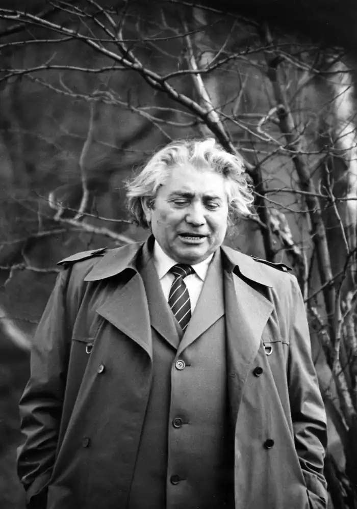

Роман Федорів
(1930 р. нар.)
Він прийшов у прозу з журналістики й через журналістику. І це виразно помітно на його перших книжках — "Жовтнева соната" (1959), "Таємниця подвигу" (1961), "Колумби", "Капелан жовтого лева" (1962). Хоча критика зустріла їх загалом прихильно, але й не бралася стверджувати, що в особі автора визріває справді серйозний прозаїк. Екзальтація, відкрита дидактика, велемовність і перечуленість, романтична поляризація характерів, доведені до схематичної сухості контрасти, надуманість конфліктів — усього цього дуже важко позбувався Роман Федорів ще й у наступних книжках "Євшан-зілля" (1966) та "Арканове коло" (1967). Він писав нариси, схожі на оповідання, й оповідання, схожі на нариси. Присвячений Олексі Довбушеві роман у легендах "Жбан вина" (1968) став новим етапом у творчій біографії автора. Це твір, у якому гармонійно узгодилися між собою матеріал і стиль. Метафорична вишуканість і патетичний тон не видаються тут недоречними, оскільки легендарний опришок живе в народній пам'яті справді романтично піднесеним, любовно зреалізованим. Особливо плідним був для Федоріва період від початку 70-х і до кінця 80-х. Саме тоді з'явилися книжки його есеїстики й повістей "Квіт папороті" (1970), "Колиска з яворового дерева" (1970), "Знак кіммерійця" (1972), "Яре зерно" (1974), "Танець Чугайстра" (1984). Широкий тематичний діапазон усіх цих творів: у них мовиться про народне мистецтво, долю культурних та історичних пам'яток, замулення джерел духовності. Майже всі тогочасні повісті Федоріва мають історичні сюжети. Це неодноразово ускладнювало життєву ситуацію письменника — нищівної "партійної" критики зазнали його "Знак кіммерійця", а також повість "Рудий Опришок" (1984). Монументальним, справді епічним полотном з життя Галицької Русі кінця XII століття став роман "Отчий світильник" (1976). Двоє людей увічнюють діяння князівські в "Отчому світильнику". Перший — Ян — плете павутиння лестощів, зображуючи правителя найхоробрішим, наймудрішим, найчеснішим, найсправедливішим і т. ін. І його анітрохи не обходить, що він зневажає правду. Янів антипод — Іван Русин — важко, в сумнівах і муках, дошукується правди, бачить багато незрозумілого в навколишньому житті: "Дивно мені, що часом мудрі оточують себе дурнями, дивно мені, що часом милосердні милосердя чинять жорстокими руками". Виразна пульсація в творі таких "вічних" морально-етичних питань, багата інваріантність людських характерів, висока художня пластика — все це справді дає право поставити "Отчий світильник" у ряд найвищих художніх досягнень українського історичного роману. Паралельно з іншими книжками створив Р. Федорів і романічну тетралогію — "Кам'яне Поле" (1978), "Жорна" (1983), "Ворожба людська" (1987) і "Єрусалим на горах" (1993). Хоч у "Єрусалимі..." не зустрічаємо героїв із трьох попередніх романів, усе ж твір споріднений з ними і проблематикою, і гострими колізіями, які передовсім пов'язані з питаннями духовного буття народу й збереження його історичної пам'яті. Р. Федорів любить розгортати оповідь кількома потоками. Це бачимо в усіх чотирьох романах про долю західноукраїнського села XX ст. Тут наявна сучасна для оповідача подієва площина, а крім того, існує і "нижній ярус" — ретроспективна лінія, яка багато прояснює в долях героїв і всій логіці подій. Саме в цих широких ретроспекціях докладно відтворено драматичну історію правдошукацтва Якова Розлуча, якому не судилося переінакшити світ, і він засумнівався, чи можна добротою змінити його. Критика постійно відносила Р. Федоріва до послідовних і яскравих представників "химерної" прози. Цим не в усьому точним означенням охоплювалися письменники, схильні до метафорично яскравої стилістики, фольклорних аналогій, різних паралелей і прийомів казкової фантастики. Усі ці прикметні риси прози письменника не згубилися й у його новому романі "Єрусалим на горах", хоча тут автор не зашифровує текст, а, як кажуть, називає речі їхніми іменами. У творі йдеться і про переслідування людей, які намагаються берегти нашу історію та культуру, й про жорстокі розправи комуністичного режиму з ними, і про облудливо-демагогічну радянську пропаганду, і про приреченість тих, кого називали дисидентами (гине головний герой роману у нерівному поєдинку з можновладцями). Якщо "Кам'яне Поле", "Жорна" й "Ворожбу людську" для спрощення визначень можна назвати "романами запитань", то "Єрусалим на горах" у такому разі можна назвати "романом відповідей". Найновіші твори Романа Федоріва — романи "Чудо святого Георгія о зміє" (в кн. "Чорна свіча від Їлени", 1996), "Лисиці брешуть на щити". Вдумливому читачеві "Отчого світильника" назва останнього твору нагадає слова з манускрипта Івана Русина, який у фіналі "Отчого світильника" написав: "Князь умер... Що тепер буде із землею галицькою? Хотів би я вірити присягам і хресному цілуванню боярському, хотів би... і не можу, не маю права. Чую-бо: лисиці виють на черленії щити". Як митець Федорів вірний своїм творчим зацікавленням, послідовний у своїх задумах і їх втіленні в художні твори. М. Слабошпицький Історія української літератури ХХ ст. — Кн. 2. — К.: Либідь, 1998.